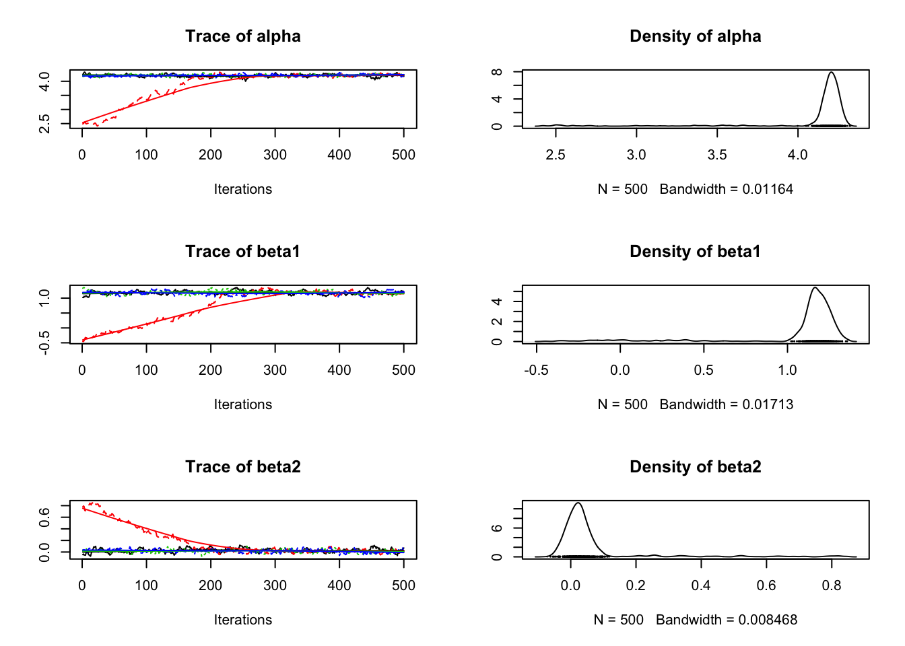
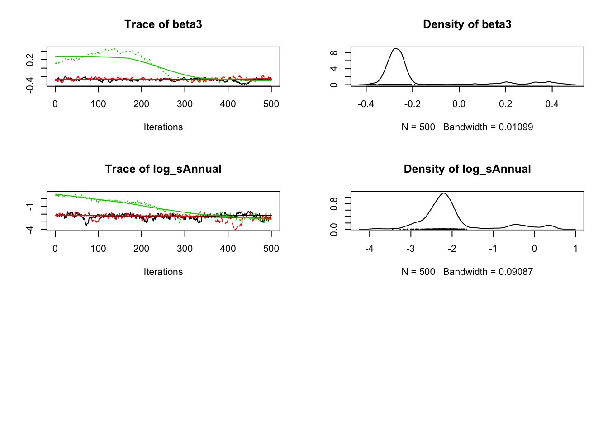
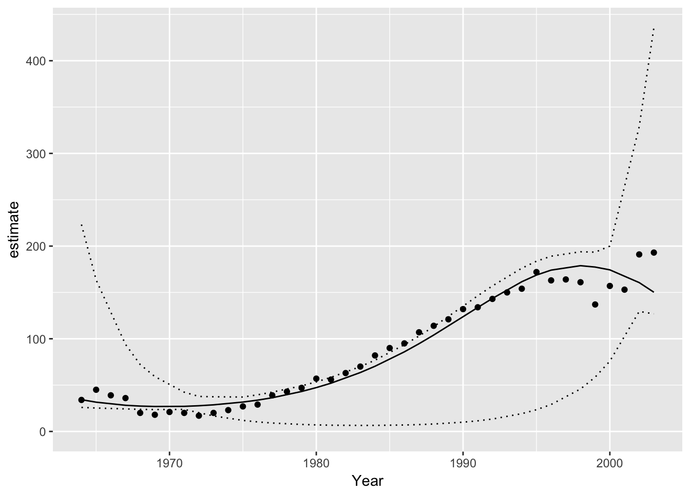

Introduction
jmbr (pronounced jimber) is an R package to facilitate analyses using Just Another Gibbs Sampler (JAGS).
It is part of the mbr family of packages.
Demonstration
library(magrittr)
library(ggplot2)
library(jmbr)# define model in JAGS language
model <- model("model {
alpha ~ dnorm(0, 10^-2)
beta1 ~ dnorm(0, 10^-2)
beta2 ~ dnorm(0, 10^-2)
beta3 ~ dnorm(0, 10^-2)
log_sAnnual ~ dnorm(0, 10^-2)
log(sAnnual) <- log_sAnnual
for(i in 1:nAnnual) {
bAnnual[i] ~ dnorm(0, sAnnual^-2)
}
for (i in 1:length(Pairs)) {
log(ePairs[i]) <- alpha + beta1 * Year[i] + beta2 * Year[i]^2 + beta3 * Year[i]^3 + bAnnual[Annual[i]]
Pairs[i] ~ dpois(ePairs[i])
}
}")
# add R code to calculate derived parameters
model %<>% update_model(new_expr = "
for (i in 1:length(Pairs)) {
log(prediction[i]) <- alpha + beta1 * Year[i] + beta2 * Year[i]^2 + beta3 * Year[i]^3 + bAnnual[Annual[i]]
}")
# define data types and center year
model %<>% update_model(
select_data = list("Pairs" = integer(), "Year*" = integer(), Annual = factor()),
derived = "sAnnual",
random_effects = list(bAnnual = "Annual"))
data <- bauw::peregrine
data$Annual <- factor(data$Year)
# analyse
analysis <- analyse(model, data = data)
#> # A tibble: 1 x 8
#> n K nchains nsims nsamples ess rhat converged
#> <int> <int> <int> <int> <int> <int> <dbl> <lgl>
#> 1 40 5 4 4000 2000 20 13.54 FALSE
analysis %<>% reanalyse(rhat = 1.05)
#> # A tibble: 1 x 8
#> n K nchains nsims nsamples ess rhat converged
#> <int> <int> <int> <int> <int> <int> <dbl> <lgl>
#> 1 40 5 4 8000 2000 20 4.65 FALSE
coef(analysis)
#> # A tibble: 5 x 7
#> term estimate sd zscore lower upper
#> * <S3: term> <dbl> <dbl> <dbl> <dbl> <dbl>
#> 1 alpha 4.1945847 0.54581984 7.2514413 2.38471109 4.2882232
#> 2 beta1 1.1663592 0.90730245 0.8071445 -1.57700555 1.4000407
#> 3 beta2 0.0233093 0.06675716 0.5715799 -0.04834223 0.2313506
#> 4 beta3 -0.2589089 0.23897967 -0.6236445 -0.37126773 0.4012331
#> 5 log_sAnnual -2.0721495 1.13803173 -1.4141560 -2.81288238 0.9021283
#> # ... with 1 more variables: pvalue <dbl>
plot(analysis)
# make predictions by varying year with other predictors including the random effect of Annual held constant
year <- predict(analysis, new_data = "Year")
# plot those predictions
ggplot(data = year, aes(x = Year, y = estimate)) +
geom_point(data = bauw::peregrine, aes(y = Pairs)) +
geom_line() +
geom_line(aes(y = lower), linetype = "dotted") +
geom_line(aes(y = upper), linetype = "dotted") +
expand_limits(y = 0)
Installation
To install from GitHub
# install.packages("devtools")
devtools::install_github("poissonconsulting/jmbr")Contribution
Please report any issues.
Pull requests are always welcome.
Please note that this project is released with a Contributor Code of Conduct. By participating in this project you agree to abide by its terms.